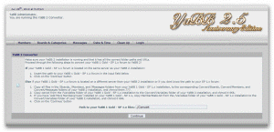

Upgrading from YaBB 1.x
This section only applies to those converting YaBB 1.x data from an existing old forum to the new YaBB 2 data format. You must also have already installed a NEW YaBB 2.5 AE forum using all of the preceeding instruction pages before continuing.
Running the Converter
- If your YaBB 1 Gold - SP 1.x forum is located on the same server as your YaBB 2.5 AE installation:
- Insert the path to your YaBB 1 Gold - SP 1.x forum in the input field on the Converters start page - and go to point 4.
Else if your YaBB 1 Gold - SP 1.x forum is located on a different server than your YaBB 2.5 AE installation or if you dont know the path to your SP 1.x forum:- You must upload the /Convert/Boards, /Convert/Members, /Convert/Messages and /Convert/Variables folders from the YaBB 2.5 AE zip package and CHMOD them 755.
- drwxr-xr-x (CHMOD 755)cgi-bin/yabb2/Convert
- drwxr-xr-x (CHMOD 755)cgi-bin/yabb2/Convert/Boards
- drwxr-xr-x (CHMOD 755)cgi-bin/yabb2/Convert/Members
- drwxr-xr-x (CHMOD 755)cgi-bin/yabb2/Convert/Messages
- drwxr-xr-x (CHMOD 755)cgi-bin/yabb2/Convert/Variables
- Copy all files from /Boards, /Members, and /Messages from your OLD YaBB 1.x forum to the corresponding /Convert folders in your NEW YaBB 2.5 AE installation. You must then copy Variables/cat.txt, Variables/attachments.txt and Variables/Membergroups.txt from your OLD YaBB 1.x forum to the /Convert/Variables folder of the NEW YaBB 2.5 AE installation.
- Visit the following URL to start the Converter (note it is the same as the URL used to install a new forum).
- http://www.example.com/cgi-bin/yabb2/Setup.pl
Modify this URL to fit your installation! If your website domain is "mysite.com" and you installed YaBB in "forum," then your url would be http://www.mysite.com/forum/Setup.pl. - The Converter will print the steps required to proceed. Make sure you have a backup of your existing YaBB 1.x data!
- You can now follow the on-screen instructions provided by the Converter. It will step you through its 5 steps by having you click the next step's link when it is time.
- After converting you should be ready to login and test your new forum.... Load YaBB.pl as shown in the previous setup stages (e.x. http://www.example.com/cgi-bin/yabb2/YaBB.pl). Again, modify this URL to fit your specific website and YaBB installation location.
- After you have successfully run your YaBB forum from the web, you need to try logging in with your existing account.
- Test everything, such as posting, registering a new member, modifying messages, etc.
- Once you are satisfied that your YaBB 1.x forum has properly been converted, use your FTP client to delete 'cgi-bin/yabb2/Setup.pl,' 'cgi-bin/yabb2/Variables/setup.lock' if it exists, and 'cgi-bin/yabb2/Variables/converter.lock.' This will prevent anyone from tampering with your forum using the Setup Utility.